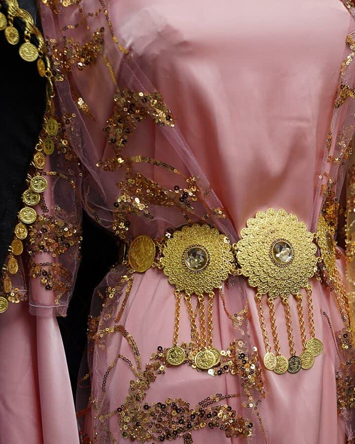
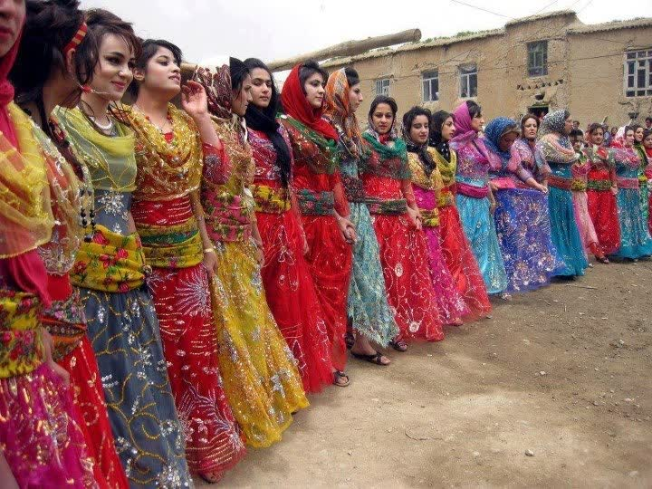

Kapak — Fotoğraf: Enasiqph · CC BY-SA 4.0 · KaynaklarBu rehberde yöresel kıyafet rengini seçerken işinize yarayacak somut ölçüleri bulacaksınız: ten renginizi iki dakikada belirleyen altın-gümüş takı testi, bordo–zümrüt–lacivert gibi klasik renklerin gündüz ve akşam ışığındaki davranışı, kuşak-elbise-şal üçlüsünde işleyen 60-30-10 oranı, salon ışığı ile flaş altında fotoğrafta iyi çıkan tonlar, kalabalık davetlerde öne çıkma ile uyum sağlama dengesi, gelinle çakışmama nezaketi ve boy-kilo algısını değiştiren renk tercihleri. Aşağıdaki renk-ortam-etki tablosuyla seçiminizi tek bakışta doğrulayabilirsiniz.
Ten Renginizi Belirleyin: Altın-Gümüş Takı Testi
Renk seçiminin başlangıç noktası kumaş değil, cilttir. Cildin alt tonu (undertone) sıcak, soğuk veya nötr olabilir ve bu, aynı bordonun bir kişide canlı, diğerinde soluk durmasının en yaygın sebebidir. En pratik yöntem takı testidir:
- Gün ışığı alan bir pencerenin yaklaşık 1 metre yakınında durun. Sarı ampul (2700K) altında yapılan test yanıltır.
- Bileğinizin iç yüzünü ve yüzünüzü makyajsız bırakın; kırmızı ruj testi bozar.
- Sarı altın rengi bir bileklik veya yüzük takıp 10 saniye aynaya bakın. Yüzün canlanıp canlanmadığına dikkat edin.
- Aynı işlemi gümüş ya da beyaz metal bir takıyla tekrarlayın.
- Hangi metalde ciltte gri-soluk bir gölge azalıyorsa alt tonunuz o gruptadır. İkisi de benzer görünüyorsa nötr tondasınız; renk aralığınız en geniş grup sizsiniz.
Doğrulama için iki ek kontrol yapabilirsiniz: bileğinizdeki damarlar gün ışığında yeşilimsi görünüyorsa sıcak, mavi-mor görünüyorsa soğuk alt ton olasılığı yüksektir. İkinci kontrol, yüzünüzün altına önce saf beyaz sonra krem bir kâğıt tutmaktır; saf beyaz yanında cildiniz sararıyorsa sıcak, kremde griye kaçıyorsa soğuk alt tondasınız.
Gruplara Göre Güvenli Renkler
- Sıcak alt ton: hardal, kiremit kırmızısı, bakır, tarçın, zeytin yeşili, sıcak bordo, altın sarısı işlemeler.
- Soğuk alt ton: fuşya, safir mavisi, lacivert, zümrüt, mürdüm, buz grisi, gümüş işlemeler.
- Nötr alt ton: çoğu ton uyar; en güvenli aralık orta koyulukta doygun renklerdir (zümrüt, bordo, petrol mavisi).
Klasik Yöresel Renkler ve Çağrıştırdıkları
Yöresel kıyafet geleneğinde renkler rastgele değil, çoğunlukla davetin türüne göre seçilir. Sık kullanılan tonlar ve genel çağrışımları şöyledir:
- Bordo: ağırbaşlı, olgun, davetin en çok tercih edilen tonlarından. Kadife ve krepte derinliği artar.
- Kırmızı: kutlamanın, coşkunun rengi; kına gecelerinde geleneksel olarak gelinin tonudur, misafirlerin dikkatli olması gereken renktir.
- Zümrüt yeşili: canlı ama iddiasız; altın işlemeyle sıcak, gümüş işlemeyle soğuk tenlere döner. Fotoğrafta en dengeli renklerden biridir.
- Lacivert: siyahın alternatifi; ciddi ama sert değil. Akşam davetlerinde yüzü siyah kadar sertleştirmez.
- Hardal: toprak tonlu, gündüz davetlerinde ve sonbaharda çok yakışır; soğuk tenlerde yüzü soldurabilir.
- Mor ve mürdüm: zarif, gösterişli ama gürültüsüz; olgun bir duruş verir.
- Fuşya: en dikkat çeken tonlardan; kalabalıkta öne çıkarır, geniş alanlarda kullanıldığında hacim algısını artırabilir.
Kesim ve kumaş ilişkisini merak ediyorsanız kıras û fistan sayfasındaki model anlatımı, renk kararınızı somutlaştırmanıza yardımcı olur.
Renk-Ortam-Etki Tablosu
Aşağıdaki tablo, bir rengi seçmeden önce üç soruyu birlikte yanıtlar: nerede giyilecek, ışıkta nasıl davranır, hangi etkiyi bırakır?
| Renk | En uygun ortam | Işık altındaki davranışı | Ten uyumu | Bıraktığı etki |
|---|---|---|---|---|
| Bordo | Akşam nişanı, salon düğünü | Sarı salon ışığında (2700–3000K) derinleşir | Sıcak ve nötr | Ağırbaşlı, olgun |
| Kırmızı | Kına gecesi (gelin dışında dikkat) | Flaşta doygunluğu artar, taşabilir | Sıcak tonlar kiremit, soğuk tonlar vişne | Coşkulu, iddialı |
| Zümrüt | Her saat, özellikle akşam | Hem sarı ışıkta hem flaşta stabil | Hepsi (nötre en yakın canlı renk) | Canlı ama ölçülü |
| Lacivert | Resmî davet, akşam yemeği | Sarı ışıkta siyaha yaklaşır | Soğuk ve nötr | Ciddi, güven veren |
| Hardal | Gündüz kutlaması, bahçe daveti | Gün ışığında (5500–6500K) canlanır, salonda matlaşır | Sıcak | Sıcak, samimi |
| Mürdüm / mor | Akşam nişanı, kına | Loş ışıkta koyulaşır, kontrast şal ister | Soğuk ve nötr | Zarif, gösterişli |
| Fuşya | Kalabalık kutlama, kına | Flaşta cilde pembe yansıma bırakabilir | Soğuk | Enerjik, dikkat çekici |
| Krem / ekru | Gündüz kır daveti | Flaşta detayı kaybolur, parlar | Sıcak | Sakin — düğünde gelinle çakışma riski |
Gündüz mü Akşam mı? Işığa Göre Ayrım
Gündüz davetlerinde ışık sıcaklığı genellikle 5500–6500K aralığındadır ve renkleri olduğu gibi gösterir; bu yüzden gündüz için orta koyulukta, doygunluğu düşük tonlar (hardal, tarçın, çağla yeşili, gül kurusu) daha dengeli durur. Akşam salonlarında ise ampuller çoğunlukla 2700–3000K sarı ışık verir: mavi ve mor grubu birkaç ton koyu, sarı ve kırmızı grubu ise daha canlı görünür.
Pratik kural: Gündüz tonu düşürün, akşam doygunluğu artırın. Gündüz zümrüt yerine çağla, akşam çağla yerine zümrüt daha iyi sonuç verir. İşleme metali de aynı mantıkla seçilir; akşam sarı ışıkta altın işleme daha çok parlar, gündüz gümüş işleme daha temiz görünür.
Mevsime Göre Renk ve Kumaş Planı
Renk kararı kumaş ağırlığından bağımsız düşünülmemeli. Aynı bordo, 110 g/m² pamuklu bir kumaşta yazlık, 300 g/m² kadifede kışlık okunur.
| Mevsim | Öne çıkan renkler | Uygun kumaş ağırlığı | Kaçınılması iyi olan |
|---|---|---|---|
| İlkbahar | Çağla, gül kurusu, açık mercan | 90–130 g/m² pamuk, ince viskon | Ağır kadife, koyu antrasit |
| Yaz | Turkuaz, fildişi dışı açık tonlar, açık mavi | 80–120 g/m² pamuk, keten karışımı | Yoğun siyah, kalın astar |
| Sonbahar | Hardal, tarçın, zeytin, bordo | 150–220 g/m² krep, ince kadife | Buz mavisi, pastel pembe |
| Kış | Zümrüt, lacivert, mürdüm, koyu bordo | 250–350 g/m² kadife, kalın krep | Açık ekru, çok ince şifon |
Şalın kumaş ve dokuma farkları için şal û şepik, baş örtüsünün desen ve renk mantığı için puşi sayfalarına göz atabilirsiniz.
Fotoğrafta İyi Çıkan Renkler
Davet fotoğrafları çoğunlukla iki zor koşulda çekilir: sarı salon ışığı ve doğrudan flaş. Her ikisinde de iyi sonuç veren renkler, orta koyulukta ve doygunluğu yüksek olanlardır.
- Flaşta güvenli: zümrüt, safir, bordo, mürdüm, petrol mavisi. Bu tonlar 1–1,5 metreden gelen flaşta detayını korur.
- Flaşta riskli: saf beyaz, açık ekru, açık pastel ve parlak saten yüzeyler. Işığı fazla yansıtıp işleme detayını silebilir.
- Cilde renk yansıtanlar: neon yeşil, canlı turuncu ve çok doygun fuşya, yakın çekimde yüze renkli bir yansıma bırakabilir; yüz hizasında mat bir şal bu etkiyi azaltır.
- Sarı salon ışığında: gri, buz mavisi ve soğuk pastel tonlar soluk görünme eğilimindedir; bu ortamda bir ton koyu seçmek daha iyi sonuç verir.
Fotoğrafta belirleyici olan renk kadar yüzeydir: mat krep ışığı yumuşatır, parlak saten aynı rengi 1–2 ton açık ve daha hacimli gösterir.
Kombin Kuralları: Kuşak, Elbise, Şal Üçlüsü
Yöresel takımda üç ana yüzey vardır: elbise, kuşak ve şal/örtü. Bu üçlüyü dengelemenin en pratik yolu 60-30-10 oranıdır: yüzeyin yaklaşık %60'ı ana renk (elbise), %30'u ikincil renk (şal veya yelek), %10'u vurgu rengi (kuşak, takı, ayakkabı).
- Ana rengi davetin saatine ve mevsime göre seçin.
- İkincil rengi belirleyin: ton-sür-ton için aynı renk ailesinden 2–3 ton fark, kontrast için renk çarkında karşıt aile (bordo–petrol, hardal–mürdüm, lacivert–bakır).
- Vurgu rengini tek noktada bırakın. Kuşak ile ayakkabıyı aynı tonda tutmak, üçüncü bir renk eklemekten daha derli toplu durur.
- İşleme metalini tek seçin: takım içinde hem altın hem gümüş işleme kullanmak dağınık görünür.
- Toplam renk sayısını 3'te tutun; desenli bir kumaş kullanıyorsanız desendeki renklerden birini kuşakta tekrarlayın.
Kuşak, kolluk ve takı seçimlerini birlikte planlamak için aksesuar bölümündeki eşleştirme örnekleri işinizi kolaylaştırır.
Kalabalık Davette Öne Çıkmak mı, Uyum Sağlamak mı?
200–300 kişilik bir kutlamada herkesin dikkatini çekmek her zaman istenen bir şey değildir. Denge kurmanın basit ölçütü şudur: tek bir güçlü unsur seçin. Ya renk çok canlı olsun ve işleme sade kalsın, ya da renk sakin olsun ve işleme öne çıksın. İkisi birden yüksekse takım yorucu görünür.
- Öne çıkmak istiyorsanız: fuşya, zümrüt veya safir gibi doygun tek renk, sade kesim, minimum aksesuar.
- Uyum sağlamak istiyorsanız: bordo, mürdüm, petrol gibi derin tonlar; vurguyu kuşak ve işlemeye bırakın.
- Aile fotoğrafı çekilecekse: yakın akrabalarla aynı renk ailesinden farklı tonlar (örneğin üç farklı yeşil) seçmek, birebir aynı rengi giymekten daha uyumlu görünür.
Gelinle Çakışmama Nezaketi
Genel kabul gören ölçü nettir: düğünde beyaz, kırık beyaz, fildişi, şampanya ve çok açık ekru misafir için uygun değildir. Kına gecelerinde ise gelin çoğunlukla kırmızı ya da koyu bordo giydiği için misafirlerin bu tonlardan uzak durması nazik bir davranıştır. Emin değilseniz aileye tek bir soru yeter: "Gelin hangi renk giyecek?" Bu soru, davetten önce sorulabilecek en pratik sorudur.
Boy ve Kilo Algısını Etkileyen Renk Seçimleri
Renk, ölçüleri değiştirmez ama algıyı değiştirir. Dikkate alınabilecek somut etkiler şunlardır:
- Tek renk (monokrom) takım dikey çizgiyi bölmediği için genellikle 3–5 cm daha uzun bir görüntü verir. Elbise ve kuşağı aynı tonda tutmak bu etkiyi güçlendirir.
- Bel hizasında kontrast kuşak beli belirginleştirir; ancak vücudu iki parçaya böldüğü için kısa boylularda üst gövdeyi kısaltabilir.
- Koyu ve mat yüzeyler (lacivert krep, koyu bordo kadife) hacmi azaltır; parlak saten ışığı yansıttığı için aynı bedende daha dolgun görünür.
- Büyük ve seyrek desen hacmi artırır, küçük ve sık desen yüzeyi düzleştirir.
- Yüz hizasındaki renk en çok fark edilen renktir: cilde yakışmayan bir tonu şal yerine etek bölgesinde kullanmak daha güvenlidir.
Seçimden Önce 6 Maddelik Kontrol
- Davet gündüz mü akşam mı, salonda mı açık havada mı?
- Gelin veya kına sahibi hangi rengi giyecek?
- Alt tonum sıcak mı soğuk mu; işleme altın mı gümüş mü olacak?
- Mevsim ve kumaş ağırlığı renkle uyumlu mu?
- Takımda kaç renk var — üçü aşıyor mu?
- Flaşlı bir deneme fotoğrafı çektim mi?
Terimlerin karşılıklarını öğrenmek için sözlük sayfasına, sık sorulan konular için sık sorulan sorular bölümüne bakabilirsiniz. Diğer yazılar blog sayfasında derlenmiştir.
Sıkça Sorulan Sorular
Ten rengimin sıcak mı soğuk mu olduğunu nasıl anlarım?
En pratik yöntem gün ışığında yapılan altın-gümüş takı testidir: sarı altın takıda yüzünüz canlanıyorsa sıcak, gümüşte canlanıyorsa soğuk alt tondasınız. Doğrulamak için bileğinizdeki damarlara bakın; yeşilimsi görünüyorsa sıcak, mavi-mor görünüyorsa soğuk alt ton olasılığı yüksektir. İkisinde de fark göremiyorsanız nötr tondasınız ve renk aralığınız en geniş grup sizsiniz.
Akşam salon düğünü için hangi renkler daha güvenli?
Salon ampulleri genellikle 2700–3000K sarı ışık verdiği için doygunluğu yüksek, orta koyulukta renkler daha iyi durur: bordo, zümrüt, lacivert, mürdüm ve safir mavisi. Buz mavisi, gri ve soğuk pastel tonlar bu ışıkta soluk görünme eğilimindedir. Akşam davetlerinde altın işleme, gümüş işlemeye göre daha çok parlar.
Kına gecesinde kırmızı giymek uygun mu?
Kına gecelerinde gelin çoğunlukla kırmızı ya da koyu bordo giydiği için misafirlerin bu tonlardan uzak durması nazik bir davranış olarak kabul edilir. Fuşya, mürdüm, zümrüt ve petrol mavisi hem canlı hem de çakışma riski düşük alternatiflerdir. Emin olmak için aileye gelinin hangi rengi giyeceğini sormak en pratik çözümdür.
Fotoğrafta en iyi çıkan renkler hangileri?
Flaş altında orta koyulukta ve doygun renkler detayını korur: zümrüt, safir, bordo, mürdüm ve petrol mavisi. Saf beyaz, açık ekru, açık pastel ve parlak saten yüzeyler flaşta ışığı fazla yansıtıp işleme detayını silebilir. Aynı rengi mat krepte seçmek, parlak satene göre daha yumuşak bir sonuç verir.
Kuşak, elbise ve şalı nasıl uyumlu seçerim?
60-30-10 oranı işe yarar: yüzeyin yaklaşık yüzde 60'ı elbisenin ana rengi, yüzde 30'u şal veya yelek, yüzde 10'u kuşak ve takı gibi vurgu unsurları olsun. Ton-sür-ton için aynı renk ailesinden 2–3 ton fark, kontrast için renk çarkında karşıt aileler (bordo–petrol, hardal–mürdüm) tercih edilir. Takım içinde toplam renk sayısını üçte tutmak dağınık görüntüyü önler.
Hangi renkler daha uzun ve ince gösterir?
Elbise ve kuşağın aynı tonda olduğu tek renkli takımlar dikey çizgiyi bölmediği için genellikle daha uzun bir görüntü verir. Koyu ve mat yüzeyler hacmi azaltır, parlak saten ise ışığı yansıttığı için aynı bedende daha dolgun görünür. Bel hizasındaki kontrast kuşak beli belirginleştirir ama kısa boylularda üst gövdeyi kısaltabilir.
Kültürden Kareler
